A generative MIDI sequencer: seventeen independent lanes, sixteen pages, sixteen scenes per page.
User manual
1.0.5VER
Lanes
17
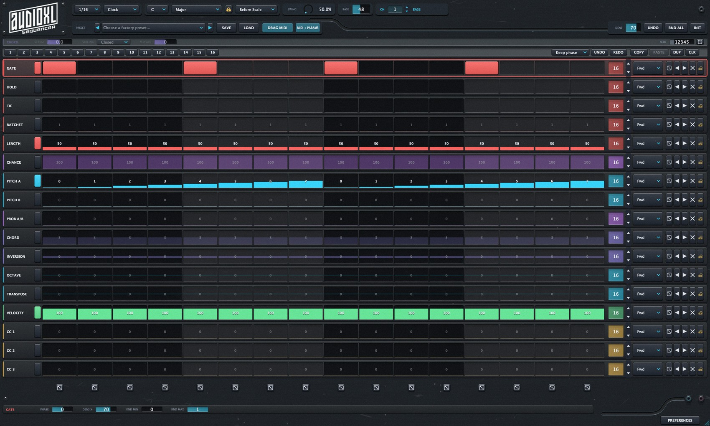
AudioXL · MilanoUser manual
00 — Contents
What's inside
About the figures
The figures are snapshots of the real window, retaken at every build: what you see here is what opens in your host. The wide, shallow bands of the interface are shown cut in half, one half above the other, so they fit the page without shrinking the lettering.
01 — How it works
Not a piano roll. Seventeen lanes.
Patterns that repeat without ever repeating the same way.
AudioXL SEQ is not a piano roll: it is an independent-lane sequencer. Whether a note plays, what pitch it has, how long it lasts, at what velocity, what chord is built on top of it — every aspect lives on its own row. The rows loop together but not in sync: this is how you get patterns that repeat without ever repeating the same way.
Two principles explain almost everything else in this manual — and one more explains the channel selector.
Position rules
The index of each lane is calculated from the host transport position, not from an internal counter. Stop, seek, loop and tempo changes are correct by design: go back to bar 5 and you hear exactly what was playing at bar 5.
Pitches are degrees
The PITCH lane says “the third degree”, not “four semitones”. That is why changing the scale or the root re-harmonises the melody by itself while staying in key, and why randomising never produces an out-of-key note.
16 pages, 16 channels
The CH selector does not filter the view: it changes page. Every MIDI channel from 1 to 16 has its own 16 patterns, its own harmony and its own clock, and all pages play together. What you see is the one you are editing: the others keep playing on their own MIDI bus.
Lanes
17
MIDI pages
16
Scenes / page
16
Factory presets
408
Quick start
AudioXL SEQ generates MIDI: on its own it makes no sound, it has to drive a software or hardware instrument. Five steps to hear it play.
01Load
The right plug-in for your host: in Logic the MIDI FX slot, in Ableton Live the Live variant, elsewhere the VST3 before the instrument.
02Route
Send the MIDI to an instrument. In Live you need a second MIDI track with Monitor set to In.
03Play
Start the host transport. With RUN on Clock the sequence follows position, tempo, stop, seek and loop.
04Draw
Turn on steps on GATE: every lit step can generate a note. PITCH A makes the melody, VELOCITY the dynamics.
05Tune
Choose ROOT and SCALE. PITCH values are scale degrees: changing key re-harmonises everything without redrawing anything.
Note
The first sound, without thinking about it. DIV 1/16, RUN Clock, ROOT C, SCALE Major; leave GATE, PITCH A, LENGTH and VELOCITY on. From there press RND ALL for an instant variation, or open the PRESET menu and pick one: it loads a four-part arrangement on channels 1-4. The plug-in replaces incoming MIDI with what it generates, and the notes that recall patterns are consumed: they never reach the instrument.
FIG. 01The whole window. Global parameters of the page at the top, the seventeen lanes in the middle, the Inspector of the selected row at the bottom.
From step to note
Worth reading once, this chain: on its own it explains why TRANSPOSE has two modes, why a chord stays in key, and why OCTAVE and BASE are not the same thing. Read it from the top: each line takes whatever came out of the one above.
01GATE → TIE → CHANCEthe step plays, ties or stays silent
02PITCH A / PITCH B (PROB A/B)= scale degree
03+ TRANSPOSE (Before Scale)still in degrees: stays in key
04→ SCALE + CHORDthe voices, still in degrees
05→ INVERSION → VOICINGinversion and spread, in semitones
06+ TRANSPOSE (After Scale)in semitones: can leave the scale
07+ OCTAVE × 12 + BASE + ROOT= MIDI note
08VELOCITY × V.SCALE → STRUMdynamics and delay between voices
09LENGTH / HOLD / RATCHEThow long it lasts, and in how many hits
Degrees first
Everything down to line 04 is still expressed in scale degrees: that is why a chord or a Before Scale transposition can never step out of key.
Semitones after
From line 05 on the values are semitones. After Scale transposition sits here — the only place where an out-of-scale note can come out, on purpose.
02 — Anatomy of the window
Seven bands, one window
From top to bottom: globals, grid, details.
From top to bottom, seven bands. The first two are the global parameters of the page in view, the centre is the grid, the bottom holds the details of the selected lane. Every figure in this chapter is a crop of the same shot as Fig. 01, cut in half so it stays readable across the page.
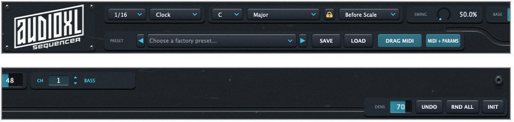
FIG. 02The two header rows: clock, scale, swing, base note and MIDI page above; presets, save, MIDI drag and global randomise below. Left half on top, right half underneath.
Header, row 1Clock, scale, swing, base note and MIDI page. These are the instrument’s global parameters, automatable from the host.
Header, row 2Factory and user presets, save, MIDI drag and drop, global randomise.
CHORD barHow the voices built by the CHORD lane are played, plus the seed of the deterministic random generator.
PATTERN barThe 16 patterns of the page, the change mode, copy/paste and undo.
The 17 lanesThe core: one row per parameter, 16 steps each.
Dice rowBelow the last lane: randomises a vertical column, that is a single step across every active lane.
InspectorAt the bottom: the details of the selected lane.
FIG. 03A whole row, cut in half: name, switch and the first eight steps on top; the other eight, the length, the direction and the end controls underneath.
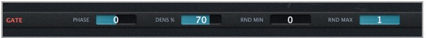
FIG. 04The Inspector at the foot of the window shows the details of the selected row — here GATE.
The window and its foot
Resizable
1400×742 → 3840×2400
The window resizes by hand. The size travels with the session, so every project reopens the sequencer as you left it. Nothing moves or disappears at the small sizes — everything tightens together, which is why the figures in this manual look like your window even if your screen is not the same.
The status line
Bottom left, it always says four things:
whether the transport is running and what step it has reached;
which page and which pattern you are looking at;
whether harmony is shared or per channel;
when a scene change is pending, which pattern is about to come in.
Two reminders follow: Cmd/Ctrl + click locks a step, and notes C-2 … B-2 recall the patterns.
03 — Header · global parameters
Eleven global controls
Automatable from the host. Mappable from your controller.
They apply to the MIDI page in view and are exposed to the host as automatable parameters. They are the same eleven you can map to a controller from PREFERENCES › MIDI MAP.
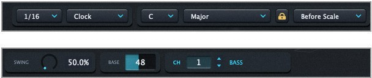
FIG. 05The first header row, cut in half: division, mode, root, scale, lock and transpose mode on top; swing, base note, MIDI page and channel name underneath.
ControlRangeWhat it does
Division1/4 … 1/32Step length: 1/4, 1/8, 1/8T, 1/16, 1/16T, 1/32. The two triplet settings (T) are the ones that really change the character of a groove without touching a single note.
Run Mode3 modesClock — the sequencer follows the host transport. Gate — lanes advance only on steps where GATE is on, so rests do not consume positions. MIDI Trigger — every incoming note advances one step: you play the sequencer from the keyboard.
RootC … BThe note the scale rests on. Change it and the whole arrangement transposes while staying in key.
Scale12 scalesChromatic, Major, Natural / Harmonic / Melodic Minor, Dorian, Phrygian, Lydian, Mixolydian, Locrian, Pentatonic Major and Minor.
ControlRangeWhat it does
Lockon / offClosed: scale, root and base note are shared by all 16 pages. Open: each page remembers its own — useful for a part that has to stay in another key.
Transpose Mode2 modesBefore Scale — the TRANSPOSE lane works in degrees, before the scale does its job: you always stay in key. After Scale — it works in semitones afterwards: this is the only place in the plug-in where an out-of-scale note can come out, and it is intentional (acid slides, chromaticism).
Swing50 … 75 %The percentage of the step pair taken by the downbeat, the Ableton Live convention: 50 is straight, 66.6 is triplets, 75 is the maximum — the off-beat delayed by half a step. It does not go below 50: pushing the off-beat early is not swing, it is a different groove.
Base0 … 108The MIDI note that degree 0 starts from. It is the slider that moves the whole arrangement in register in one go. Factory value 48, that is C2.
CH1 … 16MIDI page in view. The up/down arrows next to it move one step per click and scroll if held.
Channel name16 charactersA free label for the page — “Sub”, “Rhodes”, “Arp 1/32”. It travels with the saved session.
Swing — where the off-beat lands
Note
Swing travels on the suite bus. The SWING value is published ten times a second on the shared AudioXL bus: if AudioXL DRUMS is in the same session, the drum machine can lock on and follow this pot. SEQ acts as master without you enabling anything; the link itself is controlled from the SYNC panel in DRUMS.
04 — Presets, export, chords
408 presets, one drag away
FIG. 06The second header row: the preset menu, save and MIDI drag on the left; randomise density, undo and the two buttons that rewrite everything on the right.
ControlRangeWhat it does
Preset408 presetsA folder menu: 25 genres, from house to chiptune. The thirteen original ones hold 24 presets each, the twelve added later 8. Plus the USER folder for yours. Every preset loads a four-part arrangement — bass, lead, pad, chords on channels 1-4 — each with 16 scenes.
Save / Load.json fileSaves the complete state as a user preset, and loads it back from file.
Drag MIDIdragDrag the button onto a DAW track: it leaves the current pattern there as a MIDI clip — notes plus the three CC lanes. A plain click is not enough, it has to be a drag.
MIDI + ParamsdragAs above, but it adds a CC automation curve for every active lane, so you can reshape the pattern in the DAW. Which lanes to include is chosen in PREFERENCES › EXPORT.
Dens0 … 100The density used by RND ALL: percentage of steps touched. It does not alter the saved RND % of individual lanes.
Undo32 stepsUndoes the last randomise.
RND ALLclickRandomises every active lane together, respecting each one’s RND MIN / MAX and locked steps. On channels 1-4 it does not roll dice: it writes a part in that channel’s role — bass, lead, pad, chords — with the gate falling where it should, the right register and a fitting chord. From channel 5 up it goes back to uniform randomising.
InitclickReturns everything to its starting values and silences hanging notes.
The CHORD bar
It governs how the voices built by the CHORD lane are played. Voices are expressed in scale degrees, so a chord always stays inside the key and changes colour by itself when you change scale.
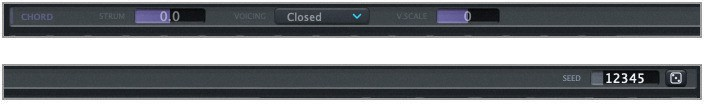
FIG. 08The CHORD bar: strum, voicing and velocity scaling on the left; at the other end of the band the generator seed and the dice that picks a new one.
ControlRangeWhat it does
Strum−60 … +60 msDelay between one voice and the next. Positive: they enter from low to high, like a downstroke. Negative: high to low. The total spread never exceeds half a step, so one chord never overruns the next.
Voicing3 modesClosed tight voices. Open alternate voices rise an octave. Wide up to two octaves.
SeednumberSeed of the pseudo-random generator. The Rnd modes are deterministic: same seed, same sequence, every time. The dice next to it picks a new one.
Voicing — measured span of a chord
FIG. 07The four buttons that take the pattern out or rewrite it, enlarged three times: the two drag buttons have to be picked up and moved, the other two are simply pressed.
The preset library
25
genres
13×24
original
12×8
added
Every preset = four parts
CH1 BassCH2 LeadCH3 PadCH4 Chords
05 — The PATTERN bar
Sixteen scenes per page
Every MIDI page has 16 patterns. They are meant as the scenes of a performance: in the factory presets they are the same groove at four levels — 1-4 basic, 5-8 development, 9-12 energy, 13-16 break.
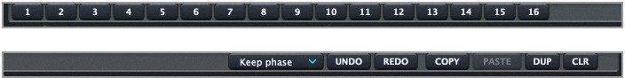
FIG. 09The sixteen scene pads at the left of the band, the change mode and the copy controls at the other end.
ControlRangeWhat it does
Pads1 … 16Recall the pattern. If the change is deferred the pad blinks until it fires.
Change mode3 modesKeep phase changes immediately keeping the current phase: the groove does not stumble. Restart changes immediately starting from step 0. Next bar waits for the next bar.
Copy / PasteclickCopy and paste the whole pattern (all 17 lanes).
DUPclickDuplicates the current pattern into the next one: the quickest way to make a variation without starting over.
CLRclickEmpties the current pattern.
Undo / Redo32 stepsUndo and redo editing changes.
Four levels of energy
In the factory presets the sixteen scenes are the same groove at four levels.
Note
Changing scene from the keyboard. Sixteen consecutive MIDI notes starting at C-2 recall the 16 patterns without touching the mouse, and they apply across the whole arrangement — they change scene on all 16 pages together. Those notes are consumed by the plug-in and never reach the instrument. The recall can be turned off, or moved to another register, from the RECALL tab in preferences.
Scene recall — C-2 … D#-1
06 — The seventeen lanes
Every aspect on its own row
Every lane has its own length (1-16) and its own playback direction. Giving different lengths to different lanes — 16 to the gate, 7 to the melody, 5 to the chords — is how this sequencer produces very long patterns without writing them out.
Rhythm
LaneRangeWhat it does
Gate0 / 1The step plays or is silent. This is the lane that dictates the rhythm; if it is off, every step plays.
Hold0 / 1The note is held until the next gate instead of closing according to LENGTH.
Tie0 / 1Ties the step to the next: the following gate does not re-trigger, the note continues. A chain of TIEs makes a single note several steps long.
Ratchet1 … 4Rapid repeats within a single step. It is the ingredient of rolls and fills.
Length5 … 200 %Note duration as a percentage of the step. Above 100 notes overlap and tie; below 30 they become very staccato.
Chance0 … 100 %Probability that the step actually plays. It filters the output but not the advance: the melody does not drift out of phase, it gets holes.
Pitch & harmony
LaneRangeWhat it does
Pitch A0 … 14Scale degree — not semitones. 0-14 are two full octaves in every 7-note scale (degree 7 = exact octave). Register beyond two octaves is handled by the OCTAVE lane.
Pitch B0 … 14An alternative melody, chosen step by step by PROB A/B.
Prob A/B0 … 100 %Probability of reading PITCH B instead of PITCH A on that step. It is the most direct way to get a melody that varies by itself.
Chord10 typesChord built on top of the note. Voices are scale degrees, so the chord stays in key.
Inversion−2 … +3Inversions. Positive: the root rises an octave. Negative: the top voice drops below (drop voicing).
Octave−3 … +3Octave transposition. This is the lane that separates the four parts of a preset in register.
Transpose−12 … +12In Before Scale it works in degrees and stays in key; in After Scale it works in semitones and can leave it.
Velocity1 … 127Step dynamics.
The ten CHORD types
Modulation
LaneRangeWhat it does
CC 1 / 2 / 30 … 127Three independent Control Change curves, each with its own CC number set in the Inspector. They go out on the channel of the page, and only when the value actually changes: no redundant traffic.
Note
Mind the CC number, not the lane name. “CC 1” is the name of the row, not the MIDI number it sends. The number is set with CC # in the Inspector. By default they are CC 1, 2 and 3 — that is Mod Wheel, Breath and one unassigned, which almost no synth listens to. The factory presets nearly always reassign them to CC 74 (cutoff) and CC 71 (resonance). If a CC “does nothing”, look there.
Grid gestures
GestureWhat it does
ClickmouseSets the value of the step. On binary lanes (GATE, HOLD, TIE) it toggles.
DragmouseDraws across several steps in a row. On binary lanes it paints the same value decided by the first click.
Double clickmouseOpens a field to type the exact value instead of guessing it by dragging. Numeric lanes only.
Cmd/Ctrl + clicklockLocks or unlocks the step. A locked step is ignored by randomise, by reset and by writing: it is how you pin the downbeat and randomise everything else.
Cmd/Ctrl + C / VkeysCopy and paste the value of the step under the mouse, even between different lanes.
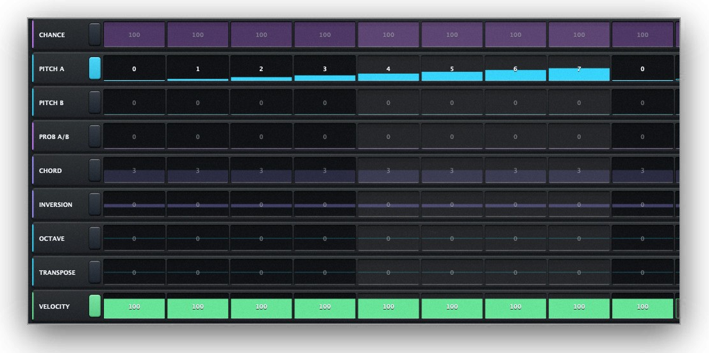
FIG. 10The first eight columns of CHANCE, PITCH A and PITCH B: the value of a step reads from the height of the bar as well as from the number.
07 — The controls on a row
Every row, its own rules
From left to right, what you find on every lane.
ControlRangeWhat it does
Lane nameclickSelects the row: the Inspector at the bottom shows its details.
Switchon / offTurns the lane on or off. A lane that is off counts as if it were not there — its neutral value is read, not its steps.
Grid16 stepsThe value area.
Length1 … 16How many steps the lane reads before starting over. This is where the polymeter comes from. The up/down arrows move one step per click.
Direction6 modesFwd forward · Bwd backward · Pend pendulum (endpoints not repeated) · BiDir pendulum with endpoints repeated · Rnd random · RndNR random without repeating twice in a row.
DiceclickRandomises this lane — horizontally, all of its steps. It respects RND %, RND MIN/MAX and locked steps.
Arrows ‹ ›clickRotate the lane values by one step. Different from PHASE, which moves the read position and leaves the values where they are.
CrossclickReturns the lane to its initial values.
Lockon / offMaster Shift. Closed, the arrows and the length of this lane apply to every lane at once: it is how you shift or shorten a whole pattern while keeping its relationships.
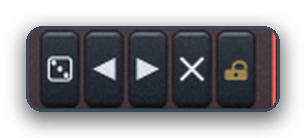
FIG. 11The five controls at the end of every row, enlarged three times: dice, rotate back and forward, reset, Master Shift.
Direction — the six read orders on a 6-step lane
The row of vertical dice
Below the last lane there is a row of 16 dice, one per column. Click one and you randomise that step across every active lane at once — vertically. It is the complement of the row dice, which randomises a whole lane horizontally.
It is what you want when a pattern is good but one single step does not convince: instead of redoing everything, you re-roll just that column. Every click can be undone, and locked steps stay untouched.
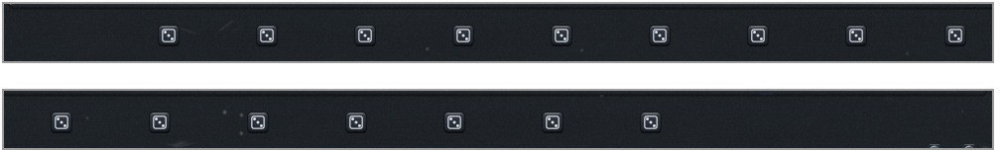
FIG. 12The row of sixteen vertical dice, cut in half: the first eight on top, the other eight underneath.
08 — Inspector
The details of a lane
The bar at the bottom. Click the name of a row to change it.
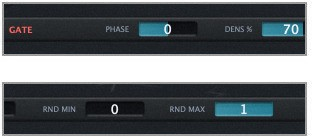
FIG. 13The Inspector with GATE selected, cut in half: phase and randomise percentage on top, the two limits underneath. On a CC lane, RND OFFSET and CC # appear alongside them.
ControlRangeWhat it does
Phase−15 … +15Shifts the read phase of the lane: the melody moves, but the values stay where they are. Different from the row arrows, which really move the values. Use it to offset one lane against the others without rewriting it.
RND %0 … 100Percentage of steps that randomise touches. At 100 % it touches them all. On GATE, HOLD and TIE every touched step still gets a genuine random 0/1 value — at 100 % they do not all turn on, they all get randomised.
RND Minlane rangeThe lowest value randomise can generate.
RND Maxlane rangeThe highest value randomise can generate.
RND Offset−100 … +100CC 1/2/3 only, independent for each. It moves the centre of gravity of randomise inside RND MIN…MAX: positive keeps high values more often, negative low ones, 0 is uniform.
CC #0 … 127CC 1/2/3 only. The Control Change number actually sent.
Fence vs gravity
Note
RND OFFSET is not a duplicate of RND MIN/MAX. MIN and MAX are a fence: they define what is possible. OFFSET is the gravity inside the fence: it defines what is likely. With MIN/MAX alone you can keep a filter high by narrowing the range to 90-127 — but then it never closes, and the modulation goes flat. With the full 0-127 range and OFFSET at +70 the filter sits high 71 % of the time, and every so often it really drops: those rare dips are what makes the line alive.
Note
The slider does not respond to a click. The bar sliders in the Inspector and on the rows move by dragging, not with a single click. That is the standard behaviour of this kind of control. If a parameter seems to “do nothing”, try dragging it.
09 — Preferences
Nine tabs, one button
The button at the bottom right opens nine tabs. The first four are about the arrangement, the three in the middle about how the plug-in ties into the rest of the studio, the last two about the licence and the version.
FIG. 14CHANNELS — the names of the 16 pages. CHAIN — the chain of scenes.
Channels
The names of the 16 MIDI pages, all at once instead of one at a time paging through CH. The factory presets fill them in with the role of the part (Bass, Lead, Pad, Chords).
Chain
It plays the patterns in sequence on its own: 1, 2, 3… up to the chosen number, then over from the first. It is the only way of changing scene that does not ask for a hand: with the chain set to 4 you have a four-bar structure that keeps turning while you play.
ChainRangeWhat it does
Patterns1 … 16How many patterns enter the chain, starting from the first. At 1 the chain is off.
Bars1 … 8How many bars each link lasts. At 1/16 a sixteen-step pattern is exactly one bar; with finer divisions it takes more bars to hear it all.
Note
Why a host loop does not throw it out of sync. Which pattern is due is decided by the host’s bar, not by an internal counter. A loop or a jump back puts the chain where it belongs. The chain applies to all sixteen pages together, so the four parts of an arrangement change scene at the same moment. A pattern chosen by hand takes priority, and the chain picks up again from the next bar.
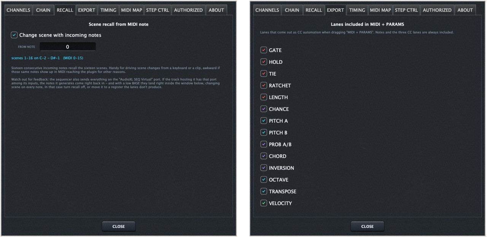
FIG. 15RECALL — scene recall from incoming MIDI notes. EXPORT — which lanes come out as automation.
Recall
Scene recall from incoming MIDI notes: sixteen consecutive notes recall the sixteen scenes. FROM NOTE moves the sixteen-note window. Watch out for feedback: if you use the “AudioXL SEQ Virtual” port as the input of the very track hosting it, the generated notes can come back in and change scene on their own.
Export
Which lanes come out as automation when you drag MIDI + PARAMS. Notes and the three CC lanes are always included; here you choose whether to add GATE, LENGTH, PITCH, VELOCITY and the rest — handy for not filling the clip with curves you will not use.
Timing — MIDI look-ahead
OFF, 1 buffer or 2 buffers, with the equivalent in milliseconds calculated on the block size in use. It compensates a latency that is not the sequencer’s: Live delivers MIDI routed out of the track one audio buffer later, and does not compensate for it.
That is why the delay grows with the block size, while the sequencer places every event at the exact sample at any buffer size.
Keep it OFF if the sequencer sits in the same chain as the instrument it drives (typical in Logic, Bitwig, Reaper): there is no buffer to make up there, and it would genuinely play early.
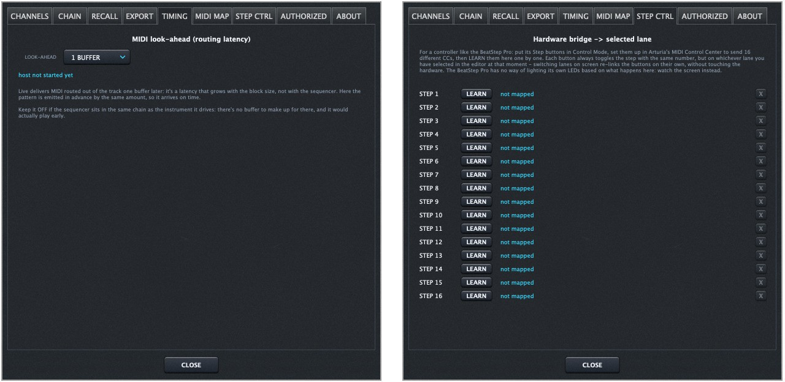
FIG. 16TIMING — MIDI look-ahead. STEP CTRL — the bridge to a sixteen-button controller.
MIDI Map
MIDI Learn for the eleven automatable header parameters. Press LEARN, then move a knob on your controller: the first CC that arrives stays mapped to that parameter, from any controller and on any channel. One CC drives one parameter only: mapping it elsewhere takes it away from where it was. The map travels with the plug-in state, not in the preset — it is a preference about your physical controller, not part of the arrangement.
Step Ctrl
A bridge between a 16-button hardware controller — designed around the Step buttons of the Arturia BeatStep Pro in Control Mode — and the lane selected in the editor. Each button always toggles the same step (1-16), but on whichever lane is selected at that moment: switch lanes on screen and the 16 buttons re-attach by themselves.
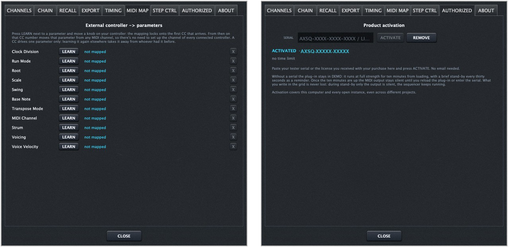
FIG. 17MIDI MAP — one CC per parameter. AUTHORIZED — serial and activation state.
Authorized
Paste the serial you received with your purchase into the SERIAL field and press ACTIVATE. Dashes, spaces and case do not matter. REMOVE takes the activation off this computer. Activation covers the machine and every open instance, even across different projects.
Demo, full
10 min
Stand-by every
30 s
Computers / serial
2
Products / serial
1
Note
What demo mode does. Without a serial the plug-in runs in full for ten minutes from loading, with a brief stand-by every thirty seconds. After ten minutes the MIDI output stays in stand-by until you reload the plug-in or enter a serial. In stand-by only the output is silent: the sequencer keeps running and what you wrote in the grid is never lost. Each serial covers two computers and one product of the suite: a SEQ serial does not activate DRUMS and vice versa.
10 — How to hook it up
Plug it in, play it out
HostFormatWhat it does
Ableton LiveVST3 LiveUse AudioXL SEQ Live: Live does not open pure VST3 MIDI effects, so this variant presents itself as an instrument with silent audio output and MIDI out. Route the MIDI output to the instrument track, or use the “AudioXL SEQ Virtual” port as an external MIDI input to get the 1-16 channel selector. With several instances open each one opens its own numbered port.
Logic ProAUAudioXL SEQ.component as a MIDI effect, before the instrument in the same chain. No latency to compensate: TIMING OFF.
Bitwig · Reaper · Cubase · Studio OneVST3AudioXL SEQ.vst3 as a MIDI effect before the instrument. TIMING OFF here too.
Quick recipes
A pattern that never repeats the same wayGive the lanes lengths that are coprime: 16 to GATE, 7 to PITCH A, 5 to CHORD, 3 to OCTAVE. The complete cycle returns to its starting point after 16×7×5×3 steps — more than twenty bars — but each individual row stays simple and readable.
Pin the downbeat and randomise the restCmd/Ctrl + click steps 1, 5, 9 and 13 of GATE to lock them, then press RND ALL as often as you like. The four-on-the-floor stays put, everything else changes.
A melody that varies by itselfTurn on PITCH B with notes different from PITCH A, then turn on PROB A/B and set it to 30-40 on a few steps only. Every pass the sequencer chooses: the line stays recognisable but is never identical.
A living filter instead of a uniform oneOn CC 1 set CC # to 74 (cutoff), RND MIN 0, RND MAX 127 and RND OFFSET to +70. Randomise. The filter stays mostly open but every so often it really drops — and those dips are what make the line alive.
Take it into the DAW and finish by handWhen you like a pattern, drag MIDI + PARAMS onto a track: you get notes and curves as an editable clip. In PREFERENCES › EXPORT choose which lanes to include.
11 — Building the sixteen scenes
One groove, sixteen scenes
01Essential
Build pattern 1 in the barest version that stands on its own.
02Add
DUP into pattern 2 and add ratchets or chords on one or two steps only.
03Offset
DUP again, and use prime lengths — 5, 7, 11, 13 — on PITCH and CC.
04Randomise
Lock the steps that give the pattern its identity, then RND ALL with a low DENS.
05Chain
In PREFERENCES › CHAIN choose how many scenes to run, and let them go.
Note
The rule that holds a bank together. Change one dimension at a time: either the rhythm, or the pitches, or the durations, or the harmony, or the modulations. The scenes stay recognisable as relatives of each other, and that is exactly what makes them useful in an arrangement: they alternate without the track changing the subject.
Three combinations to start from
Melodic polymeter
GATE length 16, PITCH A 7, VELOCITY 5. The cycle only closes after 560 steps. Put PITCH A in RndNR and lock two degrees you like, so they stay put while the rest turns.
Dub chords
CHORD 7th, VOICING Wide, STRUM 18 ms. CHANCE at 80 % so it does not land every pass, LENGTH at 65 %, and a slow CC 74 on a lane of length 11 for the filter movement.
Pad trigger
RUN on MIDI Trig. Every incoming Note On advances the sequencer one step: you play the rhythm, it chooses the notes. Avoid the sixteen pattern-recall notes, or move them in RECALL.
If something is off
SymptomWhere to look
A CC does nothingCheck CC # in the Inspector, not the row name. The default is CC 1/2/3, which almost no synth listens to.
I hear a delayIf it grows with the block size it is not the sequencer: it is the DAW’s MIDI routing. See PREFERENCES › TIMING.
A slider does not moveDrag it instead of clicking it.
Randomise leaves the scaleTranspose Mode only: After Scale can do that, and it is intentional. Put it back on Before Scale.
The preset plays in the wrong octaveThat is the OCTAVE lane of the part; the BASE slider moves the whole arrangement together instead.
Dragging produces no clipIt needs a real drag, not a click: press and move.
The recall notes reach the instrumentThey should not: they are consumed. If it happens, check you do not have a second MIDI path bypassing the plug-in — typically the virtual port used as the input of the same track.
Cheat sheet
On the grid
Clickset a value · toggle GATE, HOLD, TIE
Dragpaint several steps · move sliders
Double clicktype the exact value
Cmd/Ctrl + clicklock / unlock a step
Cmd/Ctrl + C / Vcopy / paste a step value
Remember
C-2 … D#-1recall scenes 1-16, all pages
RND ALLon CH 1-4 writes parts by role
DRAG MIDIdrag, never just click
SEEDsame seed, same sequence
UNDO32 steps deep
Now make it move
Seventeen lanes. Sixteen pages. Sixteen scenes per page. Never the same pattern twice.